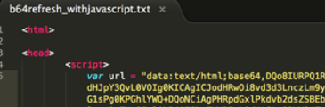

This technique makes use of data URIs to obfuscate the phishing landing page by instructing the browser to load the base64 code as the page content. The browser will render the base64 code as html if it is a supported feature. If done correctly, the initial HTML content of the phishing page will not be observed on the wire.

In this case, the code simply instructs the browser to render the base64 code as text/HTML data (Fig. 6)

Once decoded, it is evident that the base64 encoded content is simple HTML.
An end-user could watch for the unusual URL structure, as seen in the URL bar below, even if the rendered page looks
legitimate (Fig. 8):

In one interesting variant, we spotted JavaScript was embedded inside another data URI.

This nesting of data URIs will show a somewhat legitimate looking Google URL in the browser bar while the page contains actual phishing code